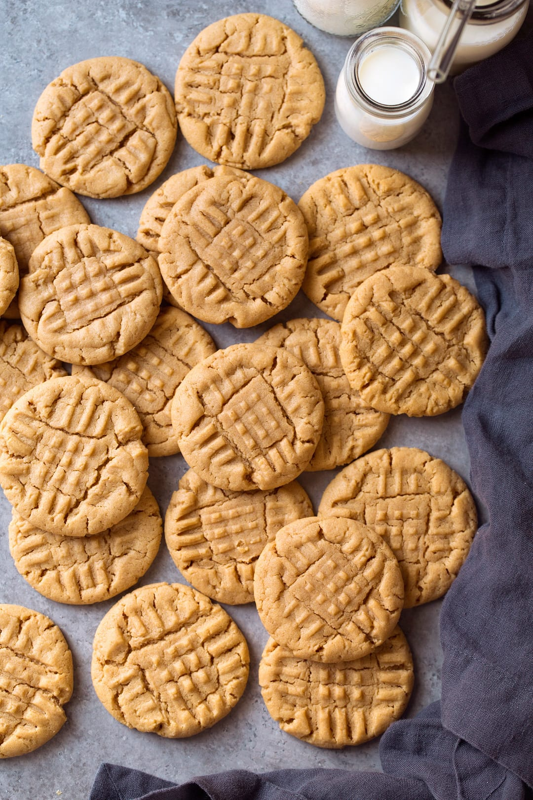

Peanut Butter Protein Cookies

Description
These delightfully soft peanut butter cookies are packed with protein (7g to be exact!)
and only require three ingredients!
Makes approximately 8. Serving size: 1 cookie.
Ingredients
- 3/4 cup peanut butter (I like Jif creamy!)
- 1/2 cup maple syrup
- 6 scoops (138g) Orgain vanilla protein powder
Steps
- Set oven to 450deg.
- Combine all ingredients in a medium bowl.
- Separate dough mixture into 8 balls.
- Roll balls in granulated sugar (optional).
- Place balls onto a lined baking sheet, pressing down with your palm to slightly
flatten the cookies.
- Bake for 5 minutes until bottom of cookies is golden.